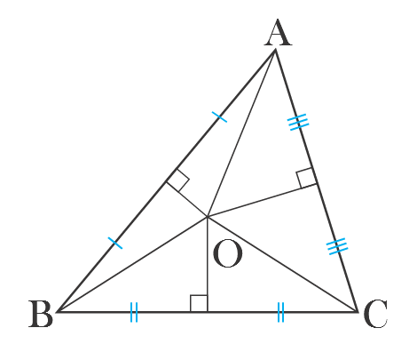
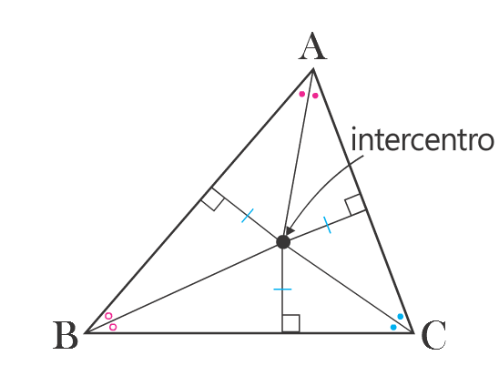
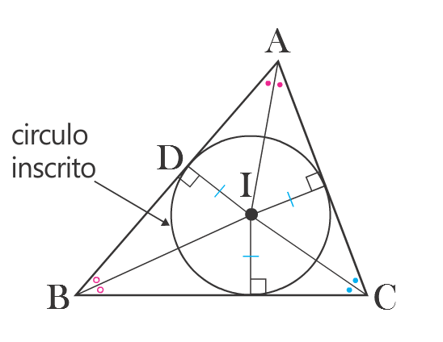

Actividad 5
Contenido
Averiguemos el significado y las caracteristicas del circuncentro del triangulo

- La linea trazada perpenticularmente de los tres segmentos del triangulo se encuentran en un punto( O ), a este punto se le llama
Circuncentro .
Averiguemos el significado y sus caracteristicas del circuncentro del triangulo.

- La distancia del circuncentro a los
tres vertices son iguales .

Averiguemos el significado y sus caracteristicas del incentro del triangulo.

-
Poniendo como centro el punto O, podemos dibujar un circulo poniendo como radio1el segmento OA. En este momento se dice que
circunscribimos el circulo O al △ABC y decimos que el circulo O es el circulocircunscrito del △ABC.